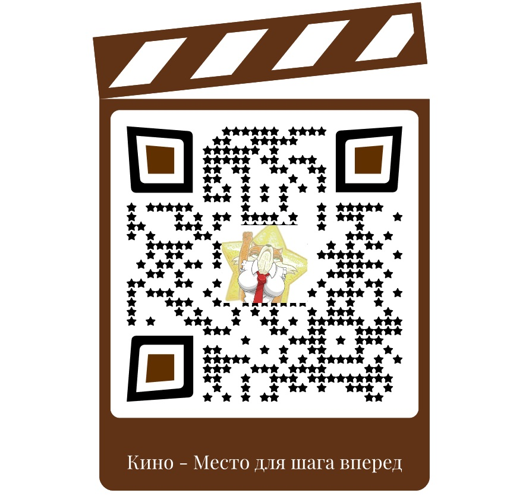

22.09.22
Аудиоверсия: t.me/binazone/459
Все в итоге оказалось Очень просто и банально, Но от этого стократно Сложно свыкнуться как с фактом
С тем, что Мир на самом деле - Постановочная сцена Созданная реквизитом Что был под рукой в то время,
Когда первый раз Адамом Номер 600013 Первым, Кто был создан самым Над "починенным" Экраном
Самой скрытой из всех скрытых Ступеней, что никогда мы И ни при каких условьях Не раскроем, не познаем
Не почувствуем, не вспомним Потому что НАФИГ НУЖНО Нам с тобой туда суваться Все мы в скорости там будем Так что можно наслаждаться
Тем, что мы вокруг "реально" "Объективным внешним миром" Называть привыкли важно Глупости своей Храм строя
Из научной просветленной И иной разумной мысли Век за веком, год за годом Заколачивая щели
В здании своей гордыни Что мы мол "мыслить умеем" И поэтому "живые"...
Это все - морок прицельный Созданный нами самими Чтобы только незаметно Было то, ЗАЧЕМ по-жизни
Мы как белка в карусели Круг за кругом "жизнь" мотаем С настроением как еслиб Срок тюремный отмеряли
Бессистемно и бесцельно Принимая "мудрость мудрых" Тех, кто рисовал на стенах Тюрем наших те текстуры,
Что мы мысылью своею Называем раз за разом Зная точно, что ни тени В них нет Жизни настоящей
Но зато нам тут комфортно Продолжать все свои силы Прилагать к самозапрету Даже мыслить КЕМ МЫ БЫЛИ
КТО МЫ ЕСТЬ НА САМОМ ДЕЛЕ ЧТО ТАКОЕ ЖИЗНЬ В ЧУДЕСНОЙ ВОСХИТИТЕЛЬНОЙ, ПРЕЛЕСНОЙ ПЕСНЕ О ЛЮБВИ ЗАВЕТНОЙ
ЧТО ИСПЫТЫВАЮТ ДВОЕ ПО СВОЕЙ СВОБОДНОЙ ВОЛЕ В ЧАС ИХ ТРЕПЕТНОЙ И НЕЖНОЙ САМОЙ ВАЖНОЙ ВО ВСЕЛЕННОЙ
ПОЛОВОЙ ЛЮБВИ ДУХОВНОЙ СЛИВШИСЬ ТЕЛОМ И ДУШОЮ В НЕЖНОМ ВОЗРАСТЕ НАЧАЛА
ЖИЗНИ ВЕЧНОЙ В МИРЕ СЧАСТЬЯ ГДЕ ОНИ ЖИВУТ НЕ "ПРОСТО" И НЕ "ПОТОМУ ЧТО НАДО" А ПОСКОЛЬКУ ИХ РАБОТА
ЛЮДЯМ ДАСТ ПРОЙТИ СТОПАМИ ЧТО ИСПЫТАНЫ ДВОИМИ СОЗДАННЫМИ С ЭТОЙ ЦЕЛЬЮ БОГОМ, ЖИВЫМ ВЫСШИМ СВЕТОМ
ВЫДУМАВШИМ ВСЕ, ЧТО БЫЛО ЕСТЬ И БУДЕТ С ЧЕЛОВЕКОМ ЧЕЛОВЕКОМ ГОВОРЯЩИМ В КРУГЕ ЖИЗНИ РАСКРЫВ ЦЕЛЕМ БЫТЬ ВПЕРВЫЕ НАСТОЯЩИМ